Código
install.packages("usethis")
library(usethis)Quantas vezes você já salvou o mesmo arquivo, com versões diferentes, só para não perder nada? E quando o arquivo sumia e ia parar em Nárnia? Desesperador, não é mesmo?! Só de pensar, já dá um friozinho na barriga.

Pois é, acredito que todos nós já fizemos isso, nem que tenha sido uma única vez (que sorte a sua se foi apenas uma vez). Após muitos anos com essa angústia toda vez que começávamos algum projeto, graças a Linus Torvalds, o famoso criador do kernel do sistema operacional Linux, nunca mais teremos que passar por isso.
Caso vocês ainda não saibam do que exatamente estamos falando, vamos contar um pouquinho mais sobre a salvação das nossas vidas: o Controle de Versão. Mas o que seria isso? Bom, o Controle de Versão é um sistema com a finalidade de gerenciar versões de um mesmo documento. Com ele você pode tranquilamente “voltar” a uma versão anterior ou “avançar” versões. Para explicar melhor, vamos voltar lá nos anos 2000. Tudo começou quando a empresa que guardava todo o código do kernel no Linux, a Bitkeeper, retirou o direito do Linux de ser isento, ou seja, de não pagar pelo uso da ferramenta.
E foi aí que o Linus Torvalds se recusou a pagar os serviços da Bitkeeper e teve a brilhante ideia de criar uma nova forma de controle de versão, o Git. E, adivinhem?! Ele realmente criou e, de longe, o Git é o sistema de controle de versão moderno mais usado no mundo. Vamos contar um pouquinho do que é o Git e o que ele pode fazer por você.
O Git é um programa que gerencia todas as alterações realizadas em um diretório. Em geral, é usado para códigos, mas pode ser usado para qualquer tipo de arquivo. Ele não passa de um programa para linha de comando que observa as mudanças nos arquivos de um diretório e vai guardando essas informações para que seja possível reverter qualquer alteração indesejada.
Junto com o Git, vamos apresentar a vocês também o GitHub. É uma plataforma de hospedagem de código para controle de versão e colaboração, para armazenar todas as versões do seu projeto baseado em Git na Internet. Ele permite que você e outras pessoas trabalhem juntos em projetos de qualquer lugar.
Neste post vamos mostrar como usar o git no RStudio. Para isso é necessário conhecer o R, que é uma linguagem de programação, além de um ambiente de software gratuito. Ele oferece um vasto leque de funcionalidades acessíveis via instalação de bibliotecas.
O RStudio é um conjunto de ferramentas integradas projetadas (IDE - Integrated Development Environment) da linguagem R para editar e executar os códigos em R. Em sua configuração padrão, a IDE manterá na “memória” todos os últimos comandos executados, todos os dados utilizados e todos os objetos criados. Com sua utilização gratuita, o RStudio é uma excelente ferramenta para desenvolvimento em R, extremamente visual quando comparado com ambientes de outras linguagens e também com o console do R, e muito simples de se utilizar!
Agora você deve estar pensando “beleza, mas e aí? Como faço para adquirir essas maravilhas?”. Calma, aos poucos vamos explicando melhor como começar a usá-las e o que elas podem fazer por você.

Bom, primeiramente, você vai precisar fazer o download. Nesse link, você encontrará vários sistemas operacionais, clique em cima do seu sistema que o download começará logo em seguida.
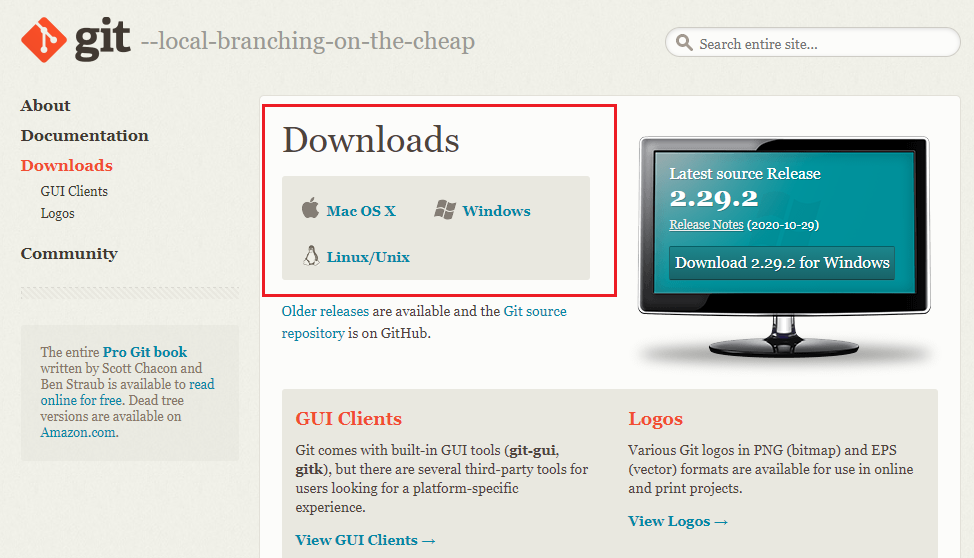

Você vai precisar apenas criar uma conta gratuita no GitHub, caso ainda não tenha. E, se você for estudante, tem a opção do GitHub Student Developer Pack, que utiliza o email institucional da sua universidade. A vantagem de usar uma conta de estudante é que os alunos têm acesso gratuito às melhores ferramentas de desenvolvedor em um só lugar, para que possam aprender fazendo.
Um dos principais benefícios de se utilizar o GitHub é o compartilhamento de projetos. Se alguém precisar ver seu trabalho ou se você quiser que eles testem seu código, eles podem obtê-lo facilmente no GitHub. Essa troca de ideias proporciona um maior aprendizado para quem se interessa por programação. Outro benefício é que você fica atualizado. Se você se importa profundamente com o projeto de outra pessoa, como um pacote R que você usa muito, pode acompanhar o desenvolvimento e atualizações no GitHub. Você pode modificar para adicionar recursos ou corrigir bugs e enviá-los de volta ao proprietário como uma alteração proposta.

O usethis é um pacote de fluxo de trabalho, automatiza tarefas repetitivas que surgem durante a instalação e o desenvolvimento do projeto. Isso inclui a configuração de testes de unidade, cobertura de teste, integração contínua com Git, GitHub, RStudio e muito mais.
Ele tem várias funções que ajudam com tarefas relacionadas ao Git, que se dividem em duas categorias:
Tarefas Git: Como clone, push e pull. Essas são coisas que podem ser feitas com o git de linha de comando;
Tarefas do GitHub: Como fork, release e pull request. Estas tarefas podem ser feitas no navegador.
Para instalar o pacote, use os seguintes comandos:
install.packages("usethis")
library(usethis)Para poder trabalhar com o Git, precisaremos fazer alguas configurações. Isso será extremamente importante para o seu projeto. Temos duas maneiras de realizar essas configurações, dentro do terminal do Git Bash ou dentro do RStudio. Fiquem atentos que vamos explicar tudo direitinho para vocês!
Você vai precisar abrir o terminal do Git Bash e digitar seu nome e email, seguindo o exemplo abaixo:
# Escrever sem o símbolo "#"
# $ git config --global user.name "Gabriella Demarque"
# $ git config --global user.email demarque.gaabs@gmail.com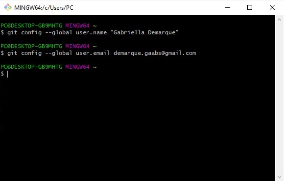
Não se preocupe, você terá que fazer isso apenas uma vez! Ah, vale lembrar que você deverá usar o email que está associado a sua conta do GitHub.
No RStudio, basta você colocar o código abaixo e pronto, já estará configurado!
usethis::use_git_config(
user.name = "Gabriella Demarque",
user.email = "demarque.gaabs@gmail.com"
)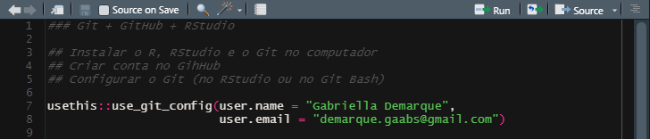
Uma funcionalidade importante do RStudio é a criação de projetos, permitindo dividir o trabalho em múltiplos ambientes, cada um com o seu diretório e documentos. Um projeto no RStudio nada mais é do que uma pasta comum com um arquivo .Rproj. O primeiro passo para organizar um bom ambiente de trabalho para análises de dados é criar um diretório onde todos os seus programas R podem viver em paz.
Para criar um projeto, basta seguir os passos:
Clique na opção “File” do menu, e então em “New Project”;
Clique em “New Directory”;
Clique em “New Project”;
Escreva o nome do diretório (pasta) onde deseja manter seu projeto, ex “my_project”;
Clique no botão “Create Project”.
Para criar um novo script para escrever os códigos, vá em File > New File > R Script.
Primeiramente, vamos utilizar a função create_project(). Dentro dela, será especificado o caminho do diretório (pasta), chamado “path”. No exemplo abaixo, criamos um projeto chamado “Projeto_Git”. Esse será o nome da pasta onde estarão todos os arquivos criados e, posteriormente, será o nome do repositório dentro do GitHub.
# usethis::create_project("C:/Users/PC/Google Drive/Post - Git+Github+RStudio/Projeto_Git")
# Para rodar não use o '#' antes do código.O RStudio abrirá uma nova janela, com o projeto criado.
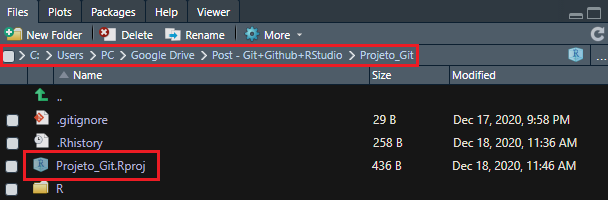
Agora você deve estar se perguntando “mas por que vamos usar o Git dentro do RStudio?”. Bom, essa é fácil de responder! Simplesmente pela facilidade e praticidade de conexão do Git + RStudio + GitHub.
usethis::use_git()Duas escolhas deverão ser feitas:
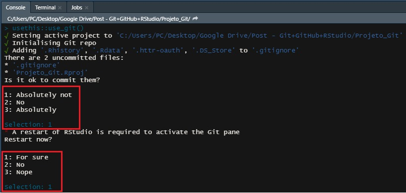
Depois de ter executado, O RStudio vai reiniciar para que apareça a aba do Git. Através dela é possível controlar todas as versões do código e enviá-las ao GitHub para que sejam armazenadas com segurança na nuvem.
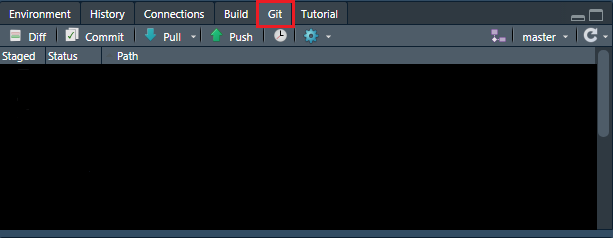
A mesma explicação que demos acima para o “Conectando o RStudio ao Git” serve para este caso. Faremos isso para facilitar a conexão entre eles.
usethis::use_github()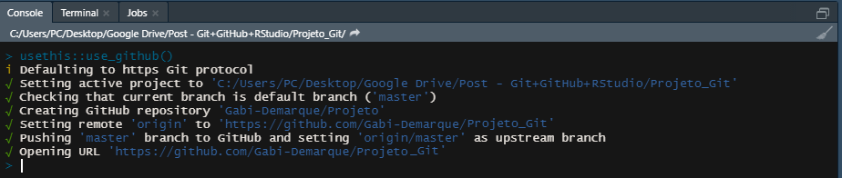

Prontinho, agora podemos começar a trabalhar no repositório.
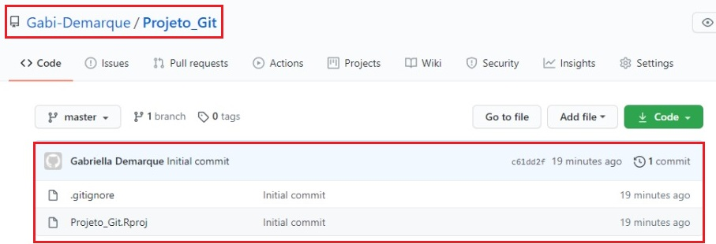

usethis::use_readme_md()O arquivo será criado e aberto, para ser editado e salvo. Lembre-se de salvar antes dos próximos passos:
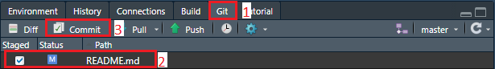
Quando clica em commit, abrirá uma nova janela. “Commit” é a forma de salvar um estado ou versão dos arquivos, criando uma revisão com um número e um comentário. Escreva a mensagem, dizendo sua mudança (escreva uma mensagem que descreva aquilo que você fez) e aperte o Commit (passo 1). “Push” envia suas alterações locais online para o GitHub (passo 2).
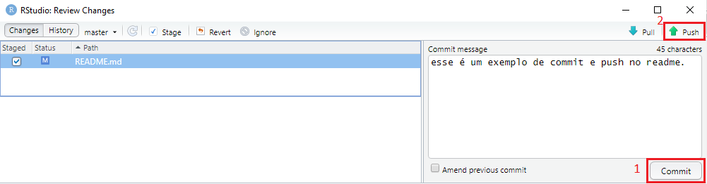
Pronto, as mudanças foram feitas e podem ser vistas no Github. As etapas de commit e push são as principais etapas dentro do Git e junto com o GitHub essas etapas vão criar as versões e armazenar de forma online as diferenças entre as versões salvas.
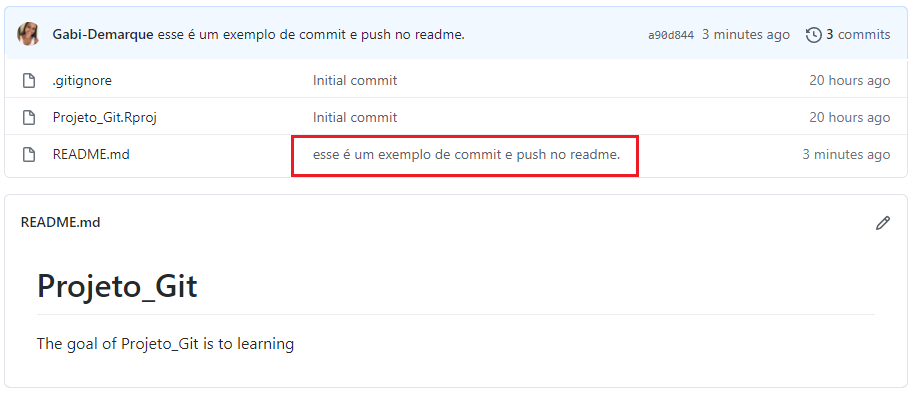
Vamos supor que você está trabalhando em um mesmo repositório que outros colegas de trabalho, e há alterações feitas por eles no GitHub e você precisa atualizar no seu computador para continuar trabalhando no arquivo modificado.
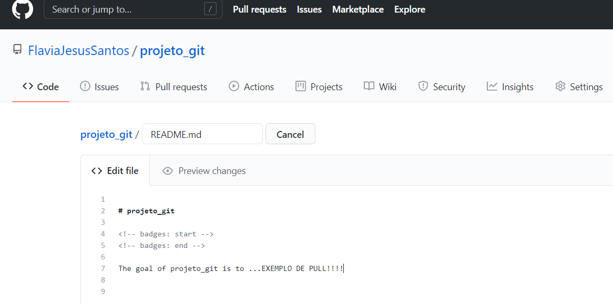
Para você atualizar seu projeto em seu computador é bem simples, é só dar PULL. Ele serve para atualizar o projeto do GitHub para o computador.
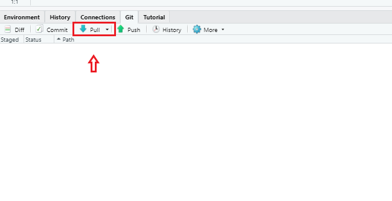
Todas as vezes que abrir seu projeto, dê um PULL para atualizar e continuar de onde parou.
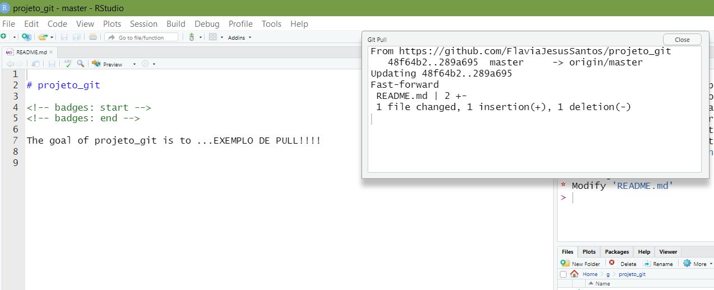
CLONAR: esse comando serve para você baixar um repositório em sua máquina pela primeira vez.
No RStudio, crie um novo projeto: File > New Project. Na aba “Create Project”, selecione a opção Version Control.
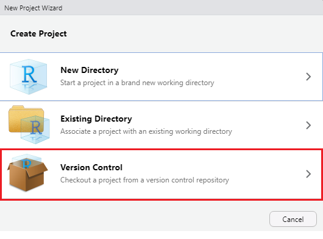
Na aba “Create Project from Version Control”, selecione a opção Git.
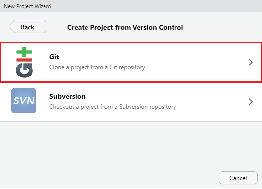
Na aba “Clone Git Repository”:
Repository URL: Cole o link para o repositório;
Project directory name: Após inserir o repository URL, esse campo será preenchido automaticamente;
Create project as subdirectory of: Selecione o diretório onde você deseja manter sua cópia local do repositório.
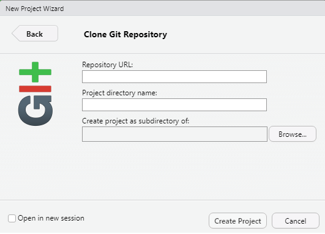
O RStudio irá fazer o clone do repositório, e abrirá um RProj para ele (caso não exista um ainda, será criado).
Para isso, usaremos a função usethis::create_from_github(). Argumentos importantes:
repo_spec = repositório que quer trabalhar. Deve estar no formato: “usuario_github/repositorio”. Veja o exemplo abaixo;
destdir = diretório local onde quer que os arquivos sejam salvos;
fork = se igual a TRUE, irá fazer o fork do repositório. Só funcionará se o token do GitHub foi configurado corretamente.
http://startsamblog.blogspot.com/2017/01/a-historia-do-git.html
https://usethis.r-lib.org/articles/articles/usethis-setup.html
Temos um tutorial mostrando o passo a passo de como usar as funcionalidades apresentadas aqui, passo a passo:

Ah, lembrando que isso foi só uma pequena parte das várias funcionalidades que o Git e GitHub tem. Infelizmente não colocamos tudo neste post, mas não se preocupe! Vocês podem acessar esse link https://githowto.com/pt-BR e ler um pouco mais sobre esse assunto que vai mudar sua vida!